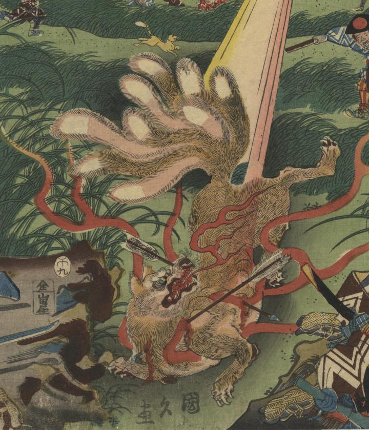

２本の矢が刺さった九尾の狐。大きな口から多数の牙が見えている。
著作者：國久／出典：親書誌：U426_nichibunken_0343：三浦上總両介那須野九尾狐討取；ミウラ カズサ リョウスケ ナスノ ニ キュウビ ノ キツネ ヲ ウチトル／日付：2014／資源識別子：U426_nichibunken_0343_0001_0000
Copyright (c)2010- International Research Center for Japanese Studies, Kyoto, Japan. All rights reserved.